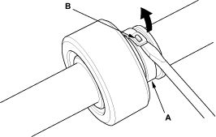
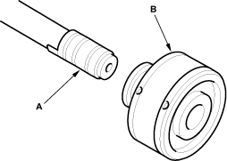
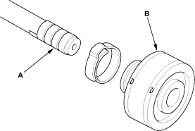
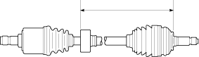

Special Tools Required
- Boot band pincers, Kent-Moore J-35910 or equivalent commercially available
- Remove the inboard joint (see page 16-5).
- Remove the dynamic damper band. Be careful not to damage the dynamic damper.
- It the dynamic damper band is an ear clamp type (A), lift up tab (B) with a screwdriver.

- Wrap the splines on the driveshaft with vinyl tape (A) to prevent damage to the dynamic damper (B).

- Remove the dynamic damper. Be careful not to damage the dynamic damper.
- Remove the vinyl tape.
- Wrap the spline with vinyl tape (A) to prevent damage to the dynamic damper (B).

- Install the dynamic damper onto the driveshaft, then remove the vinyl tape. Be careful not to damage the dynamic damper.
- Position the dynamic damper as shown below.
Left driveshaft:
261.5 - 265.5 mm (10.30 - 10.45 in.)
Right driveshaft:
478 - 482 mm (18.82 - 18.98 in.)
